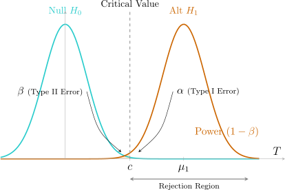

3.1 Introduction
In scientific research, we often need to evaluate the validity of theories regarding physical phenomena. Hypothesis testing is the formal process of deciding whether a claim about a population is supported by sample evidence. Because experimental measurements are subject to random error, any decision we make is also subject to error. The goal of statistical testing is to ensure these errors occur at a controlled, preset rate.
Definition 3.1.1. A statistical hypothesis is a statement concerning the distribution of a random variable \(X\), typically specified by a parameter \(\theta \). We denote the hypothesis as \(H: \theta \in \Omega _0\), where \(\Omega _0\) is a subset of the parameter space \(\Omega \).
- Simple Hypothesis: A hypothesis that specifies the distribution completely (contains only one member).
- Composite Hypothesis: A hypothesis that does not specify the distribution completely.
Example 3.1.2. If \(X \sim N(\mu , \sigma ^2)\):
- \(H: \mu = 4, \sigma ^2 = 16\) is a simple hypothesis.
- \(H: \mu = 4, \sigma ^2 > 0\) is a composite hypothesis (because \(\sigma ^2\) is not fixed).
Definition 3.1.3. A test is a rule that tells us whether to reject the null hypothesis (\(H_0\)) based on observed data. This usually involves a test statistic \(T = t(X_1, \dots , X_n)\) and a critical region \(R\).
Note 3.1.4. The four-step procedure:
- 1.
- State the Hypotheses:
- \(H_0: \theta \in \Omega _0\) (Null Hypothesis)
- \(H_1: \theta \in \Omega _1\) (Alternative Hypothesis)
- 2.
- Choose a Decision Rule: Define the rejection region \(R\), such as \[R = \{ (x_1, \dots , x_n) : t(x) \geq c \}.\]
- 3.
- Collect Data: Obtain the sample measurements.
- 4.
- Make a Decision: If the observed \(t(x)\) falls in \(R\), reject \(H_0\); otherwise, do not reject \(H_0\).
Definition 3.1.5. The critical region for a test of hypothesis is the subset of the sample space that corresponds to rejecting the null hypothesis.
Definition 3.1.6. The power function of a test with critical region \(R\) is the function \[\pi (\theta ) = P_{\theta }(X\in R)\] or the probability of rejecting \(H_0\) when the true value of the parameter is \(\theta \).
Remark 3.1.7. When performing a test of \(H_0\) versus \(H_1\) one may arrive at the correct decision or may commit one of the two kinds of errors.
|
Decision | Mother Nature (Truth)
| |
| \(H_0\) is True | \(H_0\) is False (\(H_a\) is True) |
|
| Accept \(H_0\) | \(\relax \amscheckmark \) | Type II Error (\(\beta \)) |
| Reject \(H_0\) | Type I Error (\(\alpha \)) | \(\relax \amscheckmark \) |
- (a).
- Type I error: rejecting \(H_0\) when \(H_0\) is true i.e \[\alpha (\theta ) = P_{\theta }(X\in R),\] for \(\theta \in \Omega _0\).
- (b).
- Type II error: not rejecting \(H_0\) when \(H_0\) is false \begin {align*} \beta (\theta ) & = P_{\theta }(X\in R^c), \, \quad \text {for}\quad \theta \in \Omega _1\\ & = 1 - P(X\in R), \quad \text {for}\quad \theta \in \Omega _1. \end {align*}
- (c).
- We want to minimize the two types of errors, thus we want the power function \(\pi (\theta )\) to be small for \(\theta \in \Omega _0\) bu large for \(\theta \in \Omega _1\).

The Neyman-Pearson Proposal
The core philosophy of this approach is to treat Type I and Type II errors asymmetrically. We fix the maximum allowable probability of a Type I error (\(\alpha \)) and then attempt to minimize the Type II error (or equivalently, maximize the Power).
Definition 3.1.8. A test has a level of significance \(\alpha \) if the probability of rejecting \(H_0\) when it is true never exceeds \(\alpha \) for any \(\theta \in \Omega _0\).
Definition 3.1.9. The size of the test is the ”tightest” possible level, defined as the supremum of the power function over the null parameter space: \[\text {Size} = \sup _{\theta \in \Omega _0} \pi (\theta ).\]
Questions on this section
Stuck on something here? Ask below and it stays attached to this topic.